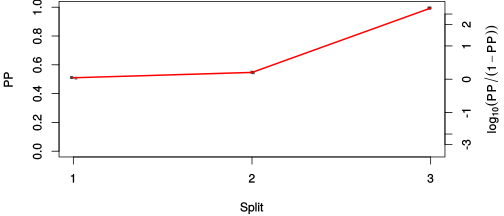

| chain # | burnin | subsample | Iterations (remaining) | command line | subdirectory | directory |
|---|---|---|---|---|---|---|
| 1 | 10000 | 1 | 90000 | bali-phy E6_AA_red3_PerissoArtio.fas -s 75438 -n PerissoArtio_c1 | PerissoArtio_c1-1 | /DATA/work/ONCOGENEVOL/database/trees/Bali-Phy/red3/E6 |
| 2 | 10000 | 1 | 90000 | bali-phy E6_AA_red3_PerissoArtio.fas -s 63215 -n PerissoArtio_c2 | PerissoArtio_c2-1 | /DATA/work/ONCOGENEVOL/database/trees/Bali-Phy/red3/E6 |
| 3 | 10000 | 1 | 90000 | bali-phy E6_AA_red3_PerissoArtio.fas -s 56966 -n PerissoArtio_c3 | PerissoArtio_c3-1 | /DATA/work/ONCOGENEVOL/database/trees/Bali-Phy/red3/E6 |
| P(data|M) = -1953.599 +- 0.125 | Complete sample: 88 topologies | 95% Bayesian credible interval: 13 topologies |
Phylogeny Distribution

| Partition support: Summary |
| Partition support graph: SVG |
{kind=link}
| 50% consensus | Newick (+PP) | SVG | |||||
| 66% consensus | Newick (+PP) | SVG | |||||
| 80% consensus | Newick (+PP) | SVG | |||||
| 90% consensus | Newick (+PP) | SVG | |||||
| 95% consensus | Newick (+PP) | SVG | |||||
| 99% consensus | Newick (+PP) | SVG | |||||
| 100% consensus | Newick (+PP) | SVG | |||||
| MAP | Newick (+PP) | SVG | |||||
| greedy | Newick (+PP) | SVG |
{kind=link}
{kind=link}
{kind=link}
{kind=link}
{kind=link}
{kind=link}
{kind=link}
{kind=link}
Alignment Distribution
Partition 1
| Diff | Min. %identity | # Sites | Constant | Informative | ||||
|---|---|---|---|---|---|---|---|---|
| Initial | FASTA | HTML | Diff | 5.19% | 155 | 1 (0.645%) | 24 (15.5%) | |
| Best (WPD) | FASTA | HTML | AU | 19.5% | 176 | 16 (9.09%) | 36 (20.5%) |

Mixing
{kind=link}
| burnin (scalar) | ESS (scalar) | ESS (partition) | ASDSF | MSDSF | PSRF-CI80% | PSRF-RCF |
|---|---|---|---|---|---|---|
| 598 | 8413 | 40923.181 | 0.002 | 0.003 | 1.001 | 1.007 |
Projection of RF distances for the first 3 chains3D | Variation of split PPs across chains |
Scalar variables
| Statistic | Median | 95% BCI | ACT | ESS | burnin | PSRF-CI80% | PSRF-RCF |
|---|---|---|---|---|---|---|---|
| prior | -140.3 | (-166.8, -118.4) | 27.84 | 9699 | 465 | 0.9999 | 0.9948 |
| prior_A1 | -119.1 | (-143.1, -100.6) | 5.062 | 53334 | 144 | 1 | 0.9962 |
| likelihood | -1941 | (-1954, -1928) | 4.289 | 62954 | 164 | 0.9999 | 0.9975 |
| logp | -2082 | (-2107, -2061) | 32.09 | 8413 | 449 | 0.9995 | 0.9938 |
| Heat.beta | 1 | ||||||
| Scale1 | 3.695 | (1.601, 7.008) | 1 | 270003 | 135 | 0.9999 | 1.001 |
| S1.F.pi.A | 0.05508 | (0.03789, 0.07408) | 8.071 | 33452 | 248 | 0.9999 | 1.001 |
| S1.F.pi.R | 0.08021 | (0.05783, 0.1044) | 7.984 | 33819 | 508 | 1.001 | 1.007 |
| S1.F.pi.N | 0.02859 | (0.01611, 0.04247) | 7.925 | 34071 | 325 | 1 | 0.9992 |
| S1.F.pi.D | 0.04962 | (0.0331, 0.06823) | 8.044 | 33563 | 348 | 0.9999 | 0.9971 |
| S1.F.pi.C | 0.06413 | (0.04237, 0.08829) | 7.886 | 34237 | 491 | 0.9999 | 1.002 |
| S1.F.pi.Q | 0.02232 | (0.0129, 0.03371) | 7.946 | 33978 | 144 | 1 | 1.002 |
| S1.F.pi.E | 0.05227 | (0.03457, 0.07153) | 8.06 | 33499 | 223 | 0.9999 | 1 |
| S1.F.pi.G | 0.07904 | (0.05468, 0.1056) | 8.121 | 33249 | 338 | 0.9998 | 1 |
| S1.F.pi.H | 0.02603 | (0.01478, 0.03932) | 8.244 | 32752 | 293 | 0.9999 | 1.001 |
| S1.F.pi.I | 0.03056 | (0.01798, 0.04601) | 8.177 | 33020 | 340 | 0.9996 | 0.9918 |
| S1.F.pi.L | 0.0948 | (0.06945, 0.1212) | 7.699 | 35069 | 454 | 1 | 1.003 |
| S1.F.pi.K | 0.06025 | (0.0436, 0.07883) | 8.117 | 33262 | 503 | 0.9999 | 0.9981 |
| S1.F.pi.M | 0.01009 | (0.003502, 0.0185) | 8.262 | 32678 | 364 | 0.9995 | 0.9972 |
| S1.F.pi.F | 0.04188 | (0.02576, 0.05953) | 8.151 | 33126 | 408 | 0.9996 | 0.9924 |
| S1.F.pi.P | 0.05643 | (0.03662, 0.07845) | 8.193 | 32953 | 178 | 1 | 0.9991 |
| S1.F.pi.S | 0.04677 | (0.03152, 0.06356) | 8.605 | 31379 | 195 | 1 | 0.9999 |
| S1.F.pi.T | 0.04604 | (0.03058, 0.06337) | 7.892 | 34211 | 334 | 0.9997 | 1.003 |
| S1.F.pi.W | 0.02219 | (0.01062, 0.03608) | 8.433 | 32017 | 598 | 1 | 1.001 |
| S1.F.pi.Y | 0.06756 | (0.04643, 0.09096) | 8.01 | 33706 | 363 | 1 | 0.9974 |
| S1.F.pi.V | 0.05558 | (0.03845, 0.07516) | 7.724 | 34955 | 578 | 1 | 0.9964 |
| I1.RS07.meanIndelLengthMinus1 | 3.468 | (1.55, 6.343) | 2.474 | 109136 | 123 | 1 | 0.9989 |
| I1.RS07.logLambda | -4.325 | (-4.921, -3.816) | 1.657 | 162898 | 90 | 0.9997 | 0.999 |
| |A1| | 174 | (164, 183) | 10.03 | 26932 | 275 | 0.9167 | 0.9996 |
| #indels1 | 14 | (12, 18) | 4.559 | 59229 | 136 | 0.75 | 0.9978 |
| |indels1| | 61 | (50, 81) | 3.808 | 70907 | 93 | 0.9344 | 0.9981 |
| #substs1 | 347 | (336, 355) | 8.037 | 33593 | 99 | 0.8919 | 1.002 |
| Scale1*|T| | 4.658 | (4.069, 5.293) | 2.107 | 128137 | 150 | 0.9998 | 1.001 |
| |A| | 174 | (164, 183) | 10.03 | 26932 | 275 | 0.9167 | 0.9996 |
| #indels | 14 | (12, 18) | 4.559 | 59229 | 136 | 0.75 | 0.9978 |
| |indels| | 61 | (50, 81) | 3.808 | 70907 | 93 | 0.9344 | 0.9981 |
| #substs | 347 | (336, 355) | 8.037 | 33593 | 99 | 0.8919 | 1.002 |
| |T| | 1.262 | (0.5211, 2.278) | 1 | 270003 | 114 | 0.9998 | 1.001 |